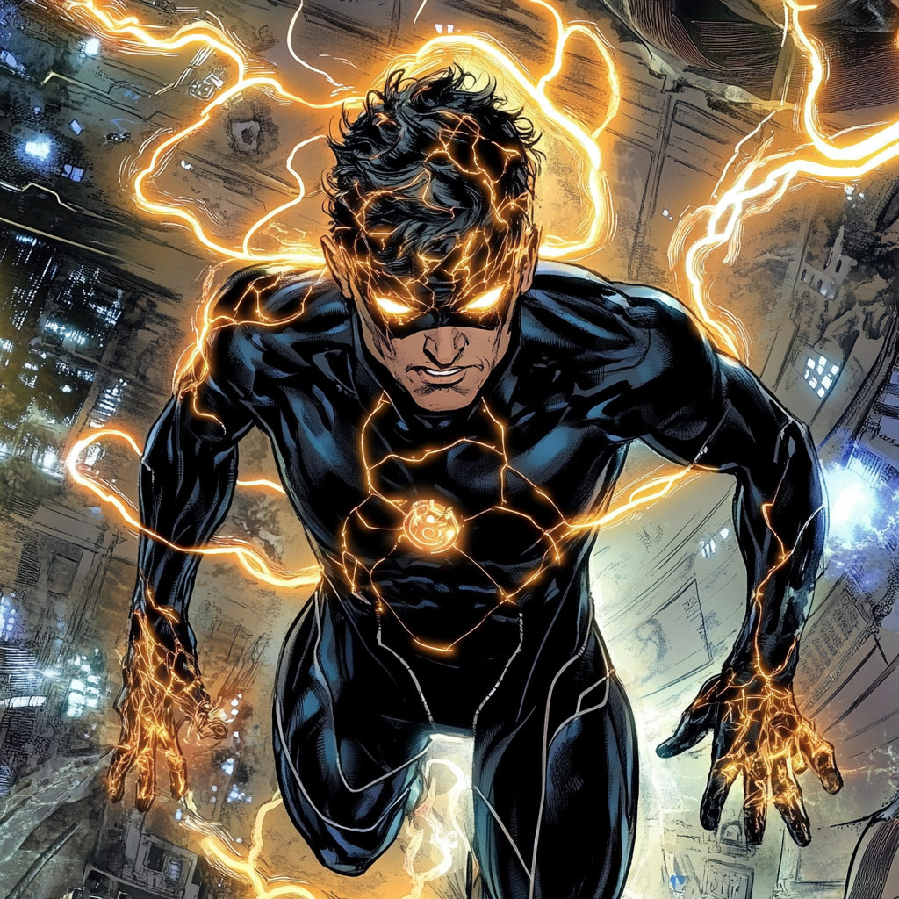

Synapse: The Mind Unbound

A Mind Built for Discovery
Dr. Elias Vance always knew he was different.
Born in Cambridge, Massachusetts, to a family of scientists, Elias was raised with an insatiable curiosity and a mind that worked faster than most. His mother, Dr. Katherine Vance, was a cognitive neuroscientist, and his father, Dr. Harold Vance, specialized in cybernetics. Their household revolved around research, discovery, and the relentless pursuit of knowledge.
Elias wasn’t just gifted, he was extraordinary. By age twelve, he was reading peer-reviewed journal articles instead of comic books. At fifteen, he was auditing neuroscience lectures at Harvard. By twenty-two, he had a doctorate in neural network modeling, pushing the boundaries of brain-computer interfaces.
But Elias wasn’t just interested in theory. He wanted to map the human mind itself, to understand the exact pathways where consciousness, intelligence, and instinct converged. To him, the brain wasn’t just an organ, it was the final frontier of human evolution.
The Experiment That Changed Everything
Elias’s groundbreaking work led him to NeuroCore Labs, an
elite research facility backed by private funding and some
very interested government agencies. The project: mapping
live neural pathways in real-time, decoding the electrical
activity of the brain down to the millisecond. The goal was
ambitious—create a digital blueprint of human cognition, a
map so precise it could predict thoughts before they formed.
The test subject? Himself.
The experiment was supposed to be safe. Using advanced neurostimulators, Elias linked his brain to the quantum processing mainframe, allowing it to read and react to his thoughts in real time. The results were incredible—a seamless digital interface between man and machine.
Then something broke.
The system overloaded, a feedback loop of pure thought energy surging through his mind. The machines couldn’t keep up. His brainwaves expanded beyond the digital field, spilling outward into the room, into the researchers, into the very walls of the lab.
For a moment, he could hear everything.
Every thought. Every emotion. Every flicker of electrical activity in the brains around him.
His body lifted from the ground, suspended in the air as the weight of a thousand minds poured into his own. The static hum of consciousness itself became deafening. He tried to move, to think, to breathe—but reality bent around him. The glass of the lab shattered. Researchers collapsed, clutching their heads as their minds overloaded from direct psychic exposure.
Then silence.
When Elias woke up, he wasn’t the same.
Awakening the Mind
His neural pathways had been rewritten. The experiment
hadn’t just mapped his brain—it had unlocked it. He could
feel thoughts around him, not as words but as waves of
intent, knowledge, and raw emotion. With focus, he could
plunge into a person’s mind, extracting secrets in an
instant. Information wasn’t just something he learned
anymore—it was something he absorbed.
And the world felt slower.
Objects around him responded to his will, moving with a thought. His body lifted effortlessly from the ground, levitating without effort. His telekinetic abilities were a byproduct of his awakened mind—an extension of thought given form.
NeuroCore Labs wanted to contain him, to study him. Government agencies wanted to weaponize him. Elias knew that if he stayed, he would become nothing more than a research subject—a mind too powerful to be left unchecked.
So he ran.
The Mind Meets the Academy
Escaping wasn’t easy. His face was already flagged in every
major database, and his abilities, though powerful, were raw
and unstable. It wasn’t until Cipher, a fellow mutant with a
gift for pattern recognition and hacking, found him that he
had a real way out.
Cipher had connections—specifically, the Boston Avengers Academy.
The Academy offered something different. They didn’t want to dissect him, control him, or turn him into a weapon. They wanted to help him hone his abilities, to turn his chaotic mind into something controlled, something precise.
Elias took on the name Synapse, a reminder of both the accident that awakened him and his new path forward.
Mastering the Mind’s Potential
At BAA, Elias was placed on Team Gamma, a unit full of
outsiders, misfits, and raw potential. He quickly earned a
reputation as the strategist, the one who could predict
enemy movements before they happened, the one who always
seemed to know more than he should.
His telepathic link allowed him to coordinate the team effortlessly, sharing plans, warnings, and tactics without a word. His ability to upload knowledge directly into his allies' minds made him an invaluable asset—one second someone was just a brawler, the next they had flawless knowledge of hand-to-hand combat techniques.
Despite his powers, Synapse remained a scientist at heart. He spent hours in the Academy’s research labs, developing neural dampeners to regulate his abilities, ensuring he didn’t accidentally hear too much. He created training simulations that allowed his team to develop faster reflexes and better battle awareness.
But even with control, there were still questions that haunted him.
Where did his powers end? Could his mind expand even further? And if it did… would he still be human?
The Mind Never Rests
While his teammates saw him as brilliant, calculated, and a
little too aware, Elias knew that his power came with a
price. The more he used his mind-reading, the harder it was
to stay disconnected from the emotions of others. The more
he interrogated thoughts, the easier it became to justify
invading the minds of those who stood against them.
But the one thing keeping him grounded was his team. They weren’t test subjects, or research projects, or minds to be dissected. They were people who trusted him, people who saw him as more than just a walking supercomputer with telekinesis.
So for now, Elias fights not just to uncover the mysteries of his mind, but to protect those who believe in him.
He may not have chosen this life, but now that he’s here—he’s going to master it.